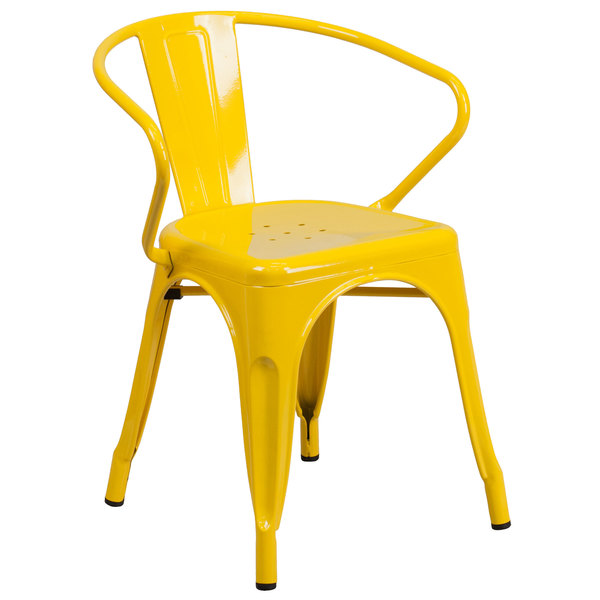
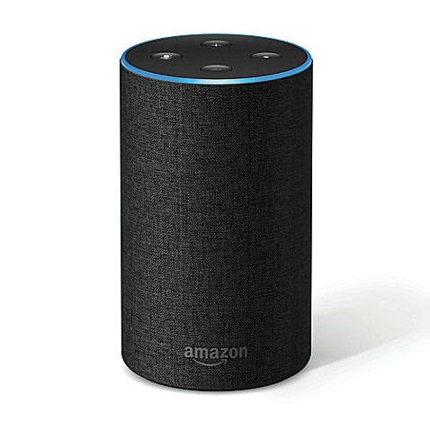
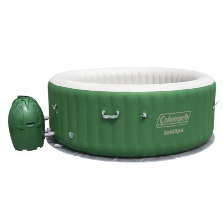

All-New Fire 7 Tablet: The next generation of our best-selling Fire tablet ever - now thinner, lighter, and with longer battery life and an improved display. More durable than the latest iPad.
All-New Fire 7 Tablet: The next generation of our best-selling Fire tablet ever - now thinner, lighter, and with longer battery life and an improved display. More durable than the latest iPad.
 Flash Furniture Yellow Metal Indoor-Outdoor Chair with Arms: Completely transform your living or restaurant space with this vintage style chair. Adding colorful chairs can rev up any setting. The versatility of this chair easily conforms in different environments. Chairs are lightweight and easily stack for storing. A cross brace underneath the seat adds extra stability and features plastic caps that prevent the finish from scratching when stacked. The frame is designed for all-weather use making it a great option for indoor and outdoor settings. For longevity, care should be taken to protect from long periods of wet weather. The legs have protective rubber feet that prevent damage to flooring. So whether you're using this chair for your kitchen, patio or bistro, it is sure to liven up your decor.
Amazon Echo: Amazon Echo is a hands-free speaker you control with your voice. Echo connects to the Alexa Voice Service to play music, make calls, send and receive messages, provide information, news, sports scores, weather, and more—instantly. All you have to do is ask.
Coleman Lay Z Spa Inflatable Hot Tub: Pamper yourself in relaxing heated water surrounded by soothing bubble jets. Easy to operate digital control panel; automatic start/stop timer-controlled heating system. 4-6 Person Capacity. Inflated walls are made of TriTech material that provides ultimate durability and comfort. Fast, easy set up - inflates using the spa's pump - NO tools needed.